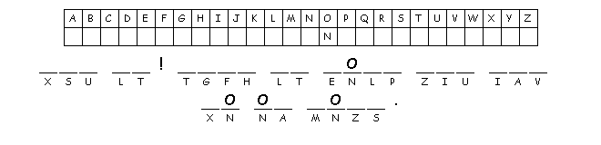

This week's lessons: Isaiah 43:18-25 Psalm 41 2 Corinthians 1:18-22 Mark 2:1-12
This
week's lessons: Isaiah
43:18-25 Psalm
41 2
Corinthians 1:18-22 Mark
2:1-12
Elementary School Pew-work
Mark 2:1-12: Jesus went back to Capernaum, and a few days later people heard that he was at home. Then so many of them came to the house that there wasn't even standing room left in front of the door.
Jesus was still teaching when four people came up, carrying a crippled man on a mat. But because of the crowd, they could not get him to Jesus. So they made a hole in the roof above him and let the man down in front of everyone. When Jesus saw how much faith they had, he said to the crippled man, "My friend, your sins are forgiven."
1. Where was Jesus at the time of this story? ______________________________________
2.
How did his friends find a way for the crippled man to reach
Jesus?
_________________________________________________________________________________
3.What
did Jesus tell the
man?
_________________________________________________________________________________
Questions taken from Sunday School Lessons; http://www.sundayschoollessons.com/
L
E T C R J T O B H
|
(Mark 2:4) And when they could not bring him to Jesus because of the crowd, they removed the roof above him; and after having dug through it, they let down the mat on which the paralytic lay. (NRSV) |
Word List |
from http://www.efree.mb.ca/lectionarypuzzles free to distribute for free with this notice. Words are in a straight line left to right or top to bottom |
||

Created by Puzzlemaker at DiscoverySchool.com
Next week's lessons: 2 Kings 2:1-12, Psalm 50:1-6, 2 Corinthians 4:3-6, Mark 9:2-9